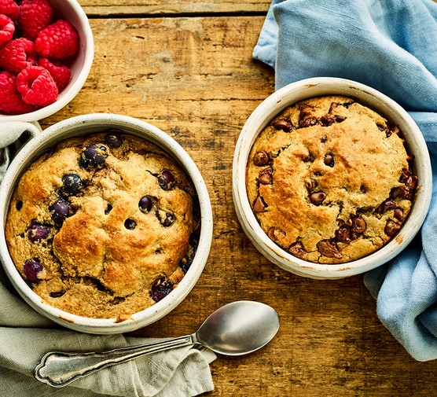

Baked Oats

Level up your oatmeal game with super delicious baked oats! Make your baked oats however you like - with tons of flavour combinations. You'll never get bored of oats again. With its cake-like texture, baked oats can double up as both a breakfast or a delicious dessert. What's not to love?
Basic Baked Oats Ingredients
- 1 egg
- 40g oats
- 1/2 teaspoon baking powder
- 1 banana
- 1 teaspoon maple syrup
- Splash of almond milk
Steps
- Preheat oven to 180C (fan 160C, or gas mark 4)
- Add all of the above ingredients to a blender, and blend until smooth.
- Pour mixture into a ramekin and place in oven.
- Cook for 25 to 30 minutes, until the mixture has risen.
- Let cool for 5 minutes. Then grab a spoon and tuck in!